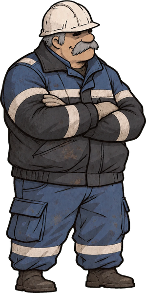
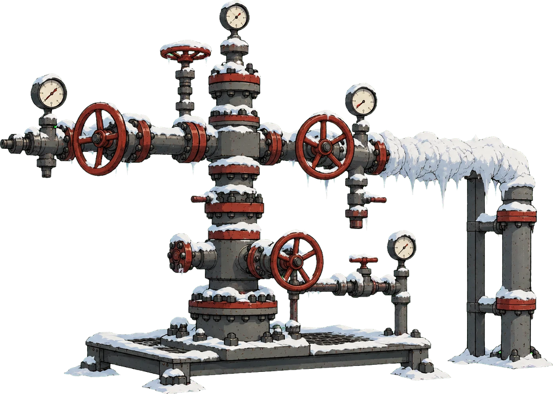

Путь газовика от первой смены до руководителя. Пилотная версия: первый эпизод.
▶ Начать: первая смена на УКПГ
Январь, Ямал, −42 °C. Переоденьтесь в спецодежду, пройдите с мастером Петровичем экскурсию по площадке, а потом разберитесь, почему скважина №101 теряет расход: мнемосхема, гидратная пробка, переключение потока.
Компрессорная станция, наставник Ильдар.
Трасса в тайге, мастер ЛЭС Анна Сергеевна.
Управление бригадой, цехом и филиалом.